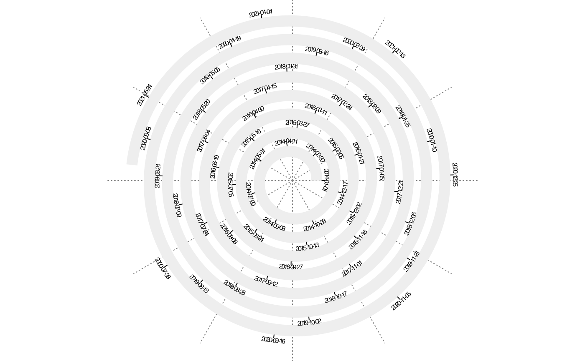
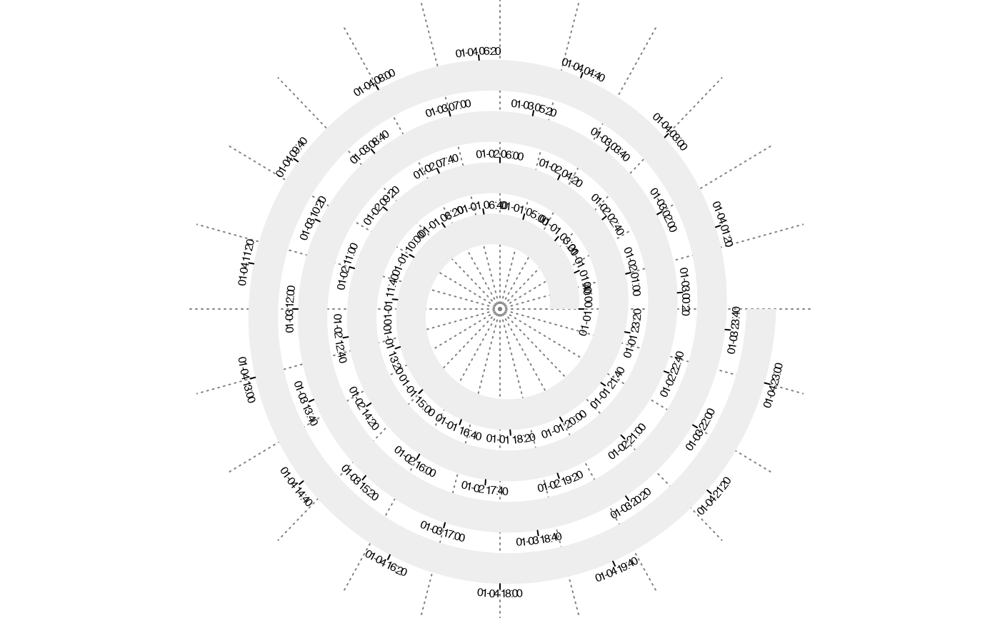

spiral_initialize_by_time.RdInitialize the spiral from time objects
Range of the time. The value can be time object such as Date, POSIXlt or POSIXct. The value can also be characters and it is converted to time objects automatically.
Start of the spiral, in degrees. By default it is automatically calculated.
End of the spiral, in degrees. By default it is automatically calculated.
Units on the axis.
Which period to use?
Whether to enforce one loop to represent a complete year?
How many periods to put in a loop?
By default different value of polar_lines_by is set for different period. E.g. 360/7 is set if period is "weeks" or 360/24 is set if peroid is set to "hours". When period is year and unit_on_axis is day, the proportion of sectors by polar lines corresponds to the proportion of month days in a year.
Whether to print messages?
All pass to spiral_initialize.
"start" and "end" are automatically calculated for different "unit_on_axis" and "period". For example, if "unit_on_axis" is "days" and "period" is "years", then the first day of each each year is always put on theta = 0 + 2*pi*k where k is the index of loops.
No value is returned.
spiral_initialize_by_time(xlim = c("2014-01-01", "2021-06-17"))
#> 'unit_to_axis' is set to 'days'.
#> 'period' is set to 'years'.
#> When the period is year and the unit on axis is day, a loop can only
#> represent 364 days (52 weeks) under default settings, which helps to
#> correspond weekdays between years, but 1 or 2 days from the current
#> year will be moved and accumulated to the next year. You can set
#> argument `normalize_year = TRUE` to enforce every loop to represent a
#> complete year, but note you might not be able to perfectly correspond
#> weekdays between different years. Set argument `verbose = FALSE` to
#> turn off this message.
spiral_track(height = 0.6)
spiral_axis()

spiral_initialize_by_time(xlim = c("2021-01-01 00:00:00", "2021-01-05 00:00:00"))
#> 'unit_to_axis' is set to 'mins'.
#> 'period' is set to 'days'.
spiral_track(height = 0.6)
spiral_axis()

spiral_initialize_by_time(xlim = c("2021-01-01 00:00:00", "2021-01-01 00:10:00"),
unit_on_axis = "secs", period = "mins")
spiral_track(height = 0.6)
spiral_axis()
